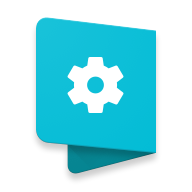

rektJS
get rekt javascript m8
Download
The useless framework
Created by Dani Guardiola because internet and drugs
...or maybe he... Illuminati??¿
TL;DR Click the blue play button down there. Good luck.
What is this?
Just try it bruh I'm very lazy to explain it
How can I try it?
Click the blue play button. R u blind or whut is ur problem
Usage (developers)
1- Download rekt.js clicking the DOWNLOAD button at the right side of the app toolbar. Move it to your project.
2- Include rekt.js in your html file. To achieve the optimal performance, run 'rekt.pre( )' when the window loads.
3- Run 'rekt.get( )' and be ready to get rekt.
It's that easy
Is this real or just a false landing page?
It is real and it works. Somebody had to do it. Sorry.
More features
- Set a "rekt-noscope" class to an element to show effects on click
- Set a "rekt-illuminati" class to an elements to play the ufo music sound when the mouse is over it
- Change options - In progress
The actual useful framework: Paperkit

This webpage is built with another framework I'm also working on named Paperkit (this one is serious, not similar to this little one weekend project :P).
It is a set of Material Design components and tools on top of standard HTML, CSS and JavaScript technologies, following 100% of the latest material specification.
Painless Material Design on web, check it out